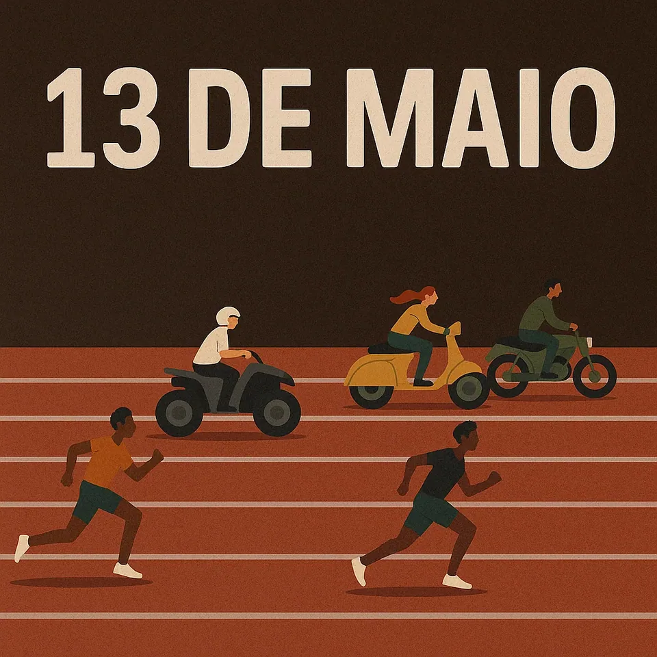

todos os textos
a coleção completa de colunas, reflexões e páginas do diário, reunidas em um só lugar.
- publicações
- 577
- primeiro texto
- 2008
- atualizado em
- 05 ago 2026
Buscar nos textos
diário
196 publicações
um texto por dia, numerado, ao longo de um ano inteiro.
mais recentes
- = 1040px) 20rem, (width >= 700px) 40vw, 74vw" alt="" width="640" height="427" loading="lazy" decoding="async" /> dia 193/365.
- = 1040px) 20rem, (width >= 700px) 40vw, 74vw" alt="" width="640" height="427" loading="lazy" decoding="async" /> dia 192/365.
- = 1040px) 20rem, (width >= 700px) 40vw, 74vw" alt="" width="640" height="427" loading="lazy" decoding="async" /> dia 191/365.
- = 1040px) 20rem, (width >= 700px) 40vw, 74vw" alt="" width="640" height="427" loading="lazy" decoding="async" /> dia 190/365.
- = 1040px) 20rem, (width >= 700px) 40vw, 74vw" alt="" width="640" height="427" loading="lazy" decoding="async" /> dia 189/365.
- = 1040px) 20rem, (width >= 700px) 40vw, 74vw" alt="" width="640" height="427" loading="lazy" decoding="async" /> dia 188/365.
antes dessas
- = 1040px) 13rem, (width >= 700px) 26vw, 46vw" alt="" width="640" height="427" loading="lazy" decoding="async" /> dia 187/365.
- = 1040px) 13rem, (width >= 700px) 26vw, 46vw" alt="" width="640" height="427" loading="lazy" decoding="async" /> dia 186/365.
- = 1040px) 13rem, (width >= 700px) 26vw, 46vw" alt="" width="640" height="427" loading="lazy" decoding="async" /> dia 185/365.
- = 1040px) 13rem, (width >= 700px) 26vw, 46vw" alt="" width="640" height="427" loading="lazy" decoding="async" /> dia 184/365.
- = 1040px) 13rem, (width >= 700px) 26vw, 46vw" alt="" width="640" height="427" loading="lazy" decoding="async" /> dia 183/365.
- = 1040px) 13rem, (width >= 700px) 26vw, 46vw" alt="" width="640" height="427" loading="lazy" decoding="async" /> dia 182/365.
- = 1040px) 13rem, (width >= 700px) 26vw, 46vw" alt="" width="640" height="427" loading="lazy" decoding="async" /> dia 181/365.
- = 1040px) 13rem, (width >= 700px) 26vw, 46vw" alt="" width="640" height="427" loading="lazy" decoding="async" /> dia 180/365.
- = 1040px) 13rem, (width >= 700px) 26vw, 46vw" alt="" width="640" height="427" loading="lazy" decoding="async" /> dia 179/365.
- = 1040px) 13rem, (width >= 700px) 26vw, 46vw" alt="" width="640" height="427" loading="lazy" decoding="async" /> dia 178/365.
- = 1040px) 13rem, (width >= 700px) 26vw, 46vw" alt="" width="640" height="427" loading="lazy" decoding="async" /> dia 177/365.
- = 1040px) 13rem, (width >= 700px) 26vw, 46vw" alt="" width="640" height="427" loading="lazy" decoding="async" /> dia 176/365.
agosto de 2026
4 textos
julho de 2026
28 textos
- dia 189/365.
- dia 188/365.
- dia 187/365.
- dia 186/365.
- dia 185/365.
- dia 184/365.
- dia 183/365.
- dia 182/365.
- dia 181/365.
- dia 180/365.
- dia 179/365.
- dia 178/365.
- dia 177/365.
- dia 176/365.
- dia 175/365.
- dia 174/365.
- dia 173/365.
- dia 172/365.
- dia 171/365.
- dia 170/365.
- dia 169/365.
- dia 168/365.
- dia 167/365.
- dia 166/365.
- dia 165/365.
- dia 163/365.
- dia 164/365.
- dia 162/365.
junho de 2026
23 textos
maio de 2026
26 textos
- dia 138/365.
- dia 137/365.
- dia 136/365.
- dia 135/365.
- dia 134/365.
- dia 133/365.
- dia 132/365.
- dia 131/365.
- dia 130/365.
- dia 129/365.
- dia 128/365.
- dia 127/365.
- dia 126/365.
- dia 125/365.
- dia 124/365.
- dia 123/365.
- dia 121/365.
- dia 122/365.
- dia 120/365.
- dia 119/365.
- dia 118/365.
- dia 117/365.
- dia 116/365.
- dia 115/365.
- dia 114/365.
- dia 113/365.
abril de 2026
26 textos
- dia 112/365.
- dia 111/365.
- dia 110/365.
- dia 109/365.
- dia 108/365.
- dia 107/365.
- dia 106/365.
- dia 105/365.
- dia 104/365.
- dia 103/365.
- dia 102/365.
- dia 101/365.
- dia 100/365.
- dia 99/365.
- dia 98/365.
- dia 97/365.
- dia 96/365.
- dia 95/365.
- dia 94/365.
- dia 93/365.
- dia 92/365.
- dia 91/365.
- dia 90/365.
- dia 89/365.
- dia 88/365.
- dia 87/365.
março de 2026
29 textos
- dia 86/365.
- dia 85/365.
- dia 83/365.
- dia 84/365.
- dia 82/365.
- dia 81/365.
- dia 80/365.
- dia 79/365.
- dia 78/365.
- dia 77/365.
- dia 76/365.
- dia 75/365.
- dia 73/365.
- dia 74/365.
- dia 70/365.
- dia 71/365.
- dia 72/365.
- dia 69/365.
- dia 68/365.
- dia 65/365.
- dia 66/365.
- dia 67/365.
- dia 64/365.
- dia 63/365.
- dia 62/365.
- dia 60/365.
- dia 61/365.
- dia 58/365.
- dia 59/365.
fevereiro de 2026
29 textos
- dia 56/365.
- dia 57/365.
- dia 54/365.
- dia 55/365.
- dia 52/365.
- dia 53/365.
- dia 50/365.
- dia 51/365.
- dia 48/365.
- dia 49/365.
- dia 46/365.
- dia 47/365.
- dia 44/365.
- dia 45/365.
- dia 42/365.
- dia 43/365.
- dia 41/365.
- dia 38/365.
- dia 39/365.
- dia 40/365.
- dia 36/365.
- dia 37/365.
- dia 35/365.
- dia 33/365.
- dia 34/365.
- dia 31/365.
- dia 32/365.
- dia 29/365.
- dia 30/365.
janeiro de 2026
28 textos
- dia 28/365.
- dia 27/365.
- dia 24/365.
- dia 25/365.
- dia 26/365.
- dia 23/365.
- dia 21/365.
- dia 22/365.
- dia 20/365.
- dia 19/365.
- dia 15/365.
- dia 16/365.
- dia 17/365.
- dia 18/365.
- dia 14/365.
- dia 13/365.
- dia 12/365.
- dia 10/365.
- dia 11/365.
- dia 7/365.
- dia 8/365.
- dia 9/365.
- dia 6/365.
- dia 5/365.
- dia 3/365.
- dia 4/365.
- dia 1/365.
- dia 2/365.
2023
2 textos
2017
1 texto
coluna
108 publicações
a coluna semanal, publicada em mais de 40 jornais e portais do país.
mais recentes
- = 1040px) 20rem, (width >= 700px) 40vw, 74vw" alt="" width="640" height="427" loading="lazy" decoding="async" /> o que precisa morrer em você.
- = 1040px) 20rem, (width >= 700px) 40vw, 74vw" alt="" width="640" height="427" loading="lazy" decoding="async" /> um milímetro.
- por que eu odeio acordar cedo.
- no brasil, não precisa de guerra.
- o cansaço que não passa com sono.
- o peso do fácil.
antes dessas
- o fracasso glorioso de tentar ser organizado.
- a vida não vai te poupar mas pode te transformar.
- a filosofia do banho quente.
- sentir demais não é defeito.
- o amor também se desfaz em silêncio.
- a mentira universal do “segunda eu começo”.
- você não precisa ser forte o tempo todo.
- amizades adultas e a vitória que é conseguir marcar um café.
- você não é preguiçoso você só está exausto.
- crescer é perder o encanto e ainda sim continuar acreditando.
- a vida como fila: sempre tem alguém passando na sua frente sem explicação.
- o vazio não é ausência é espaço para o novo.
2026
32 textos
- o que precisa morrer em você.
- um milímetro.
- por que eu odeio acordar cedo.
- no brasil, não precisa de guerra.
- o cansaço que não passa com sono.
- o peso do fácil.
- o fracasso glorioso de tentar ser organizado.
- a vida não vai te poupar mas pode te transformar.
- a filosofia do banho quente.
- sentir demais não é defeito.
- o amor também se desfaz em silêncio.
- a mentira universal do “segunda eu começo”.
- você não precisa ser forte o tempo todo.
- amizades adultas e a vitória que é conseguir marcar um café.
- você não é preguiçoso você só está exausto.
- crescer é perder o encanto e ainda sim continuar acreditando.
- a vida como fila: sempre tem alguém passando na sua frente sem explicação.
- o vazio não é ausência é espaço para o novo.
- nada é tão urgente quanto parece no meio do caos.
- o caos sentimental do tô bem.
- o silêncio como resposta.
- você está se culpando por quem já não existe mais.
- jogando no mundo ”seja o que deus quiser”
- tudo passa.
- a falsa promessa do ínicio de ano (´´ano novo,eu velho).
- como o celular virou um apocalipse portátil.
- tudo passa.
- a mentira chamada ´´vou responder depois´´.
- um sorriso muda tudo: o segredo para dias melhores.
- hoje eu só quero a paz.
- olá dezembro.
- hoje eu saí comigo mesmo.
2025
45 textos
- o amor pode ser uma emergência da vida.
- o oceano que existe em nós.
- natal.
- dúvida
- o poder das palavras.
- desistir.
- eu votaria em mim.
- você já sobreviveu a coisas que jurou que não suportaria.
- curiosidade.
- frio.
- fraude
- amor.
- gratidão.
- o abraço que nunca se desfez.
- o poder de um sorriso.
- do arrependimento ao recomeço.
- entre padrões e escolhas.
- quando a alma pesa.
- ela é mãe. ponto.
- a resposta que você procura não está fora.
- enquanto você se abandona o mundo continua.
- a beleza de não ser o que esperavam.
- o tempo não cura, ele revela
-
 você não precisa estar pronto pra começar.
você não precisa estar pronto pra começar.
- não existe evolução sem atravessar o incômodo.
- o que ainda não se encaixou.
- não somos árvores – podemos nos mover.
- ser leve não é ser raso.
- a urgência de viver o agora.
- gentileza que não se exibe.
- sob pressão.
- o que sobra depois.
- as coisas que não couberam
- tem coisa que só o corpo ensina.
- ninguém ensina a voltar.
- as vidas que não vivemos.
- vácuo emocional.
- o perigo de sentir demais.
- fé – mesmo quando tudo desaba.
- a quarta é cinza.
- todas as fases de um jogo.
- o fim da gentileza: quando ser educado se torna um choque.
- próxima parada 2025.
- feliz aniversário.
- existem dores que nunca passam.
2024
31 textos
- renascer.
- oi ano novo.
- tu és pedro.
- inesperado.
- dr pai.
- vida.
- medianos.
- a brisa.
- sono.
- o passado do meu futuro.
- é dengue?
- arrependimento.
- mulher-maravilha.
- dia dos namorados.
- vitrúvio.
- a incrível melancolia.
- euforia
- equilíbrio da vida
- obrigado.
- medo.
- paz.
- pedras.
- desculpa.
- simpatia.
- dor.
- sentir.
- todo mês é amarelo.
- perrengue chic.
- risco perfeito.
- cadê a sua criança?
- fracasso.
textos
235 publicações
o acervo aberto: prosa curta, cartas e poesia, do primeiro ao mais recente.
mais recentes
- = 1040px) 20rem, (width >= 700px) 40vw, 74vw" alt="" width="640" height="427" loading="lazy" decoding="async" /> brasilidades.
- = 1040px) 20rem, (width >= 700px) 40vw, 74vw" alt="" width="640" height="427" loading="lazy" decoding="async" /> carta para belchior.
- = 1040px) 20rem, (width >= 700px) 40vw, 74vw" alt="" width="640" height="427" loading="lazy" decoding="async" /> eu não me arrependo.
- = 1040px) 20rem, (width >= 700px) 40vw, 74vw" alt="" width="640" height="427" loading="lazy" decoding="async" /> memória.
- = 1040px) 20rem, (width >= 700px) 40vw, 74vw" alt="" width="640" height="427" loading="lazy" decoding="async" /> o lado escuro da alma.
- = 1040px) 20rem, (width >= 700px) 40vw, 74vw" alt="" width="640" height="427" loading="lazy" decoding="async" /> dia 39
antes dessas
- = 1040px) 13rem, (width >= 700px) 26vw, 46vw" alt="" width="640" height="427" loading="lazy" decoding="async" /> dia 38
- = 1040px) 13rem, (width >= 700px) 26vw, 46vw" alt="" width="640" height="427" loading="lazy" decoding="async" /> eu quero uma casa.
- = 1040px) 13rem, (width >= 700px) 26vw, 46vw" alt="" width="640" height="427" loading="lazy" decoding="async" /> dia 37
- = 1040px) 13rem, (width >= 700px) 26vw, 46vw" alt="" width="640" height="427" loading="lazy" decoding="async" /> dia 36
- = 1040px) 13rem, (width >= 700px) 26vw, 46vw" alt="" width="640" height="427" loading="lazy" decoding="async" /> tropeço.
- = 1040px) 13rem, (width >= 700px) 26vw, 46vw" alt="" width="640" height="427" loading="lazy" decoding="async" /> dia 35
- = 1040px) 13rem, (width >= 700px) 26vw, 46vw" alt="" width="640" height="427" loading="lazy" decoding="async" /> dia 34
- = 1040px) 13rem, (width >= 700px) 26vw, 46vw" alt="" width="640" height="427" loading="lazy" decoding="async" /> dia 33
- dia 32
- = 1040px) 13rem, (width >= 700px) 26vw, 46vw" alt="" width="640" height="427" loading="lazy" decoding="async" /> dia 31
- dia 30
- dia 29
2026
2 textos
2023
19 textos


2020
1 texto
2018
4 textos
2017
22 textos
2016
17 textos
2015
5 textos
2013
13 textos
2012
9 textos
2011
10 textos
2010
11 textos
dezembro de 2009
2 textos
novembro de 2009
2 textos
outubro de 2009
1 texto
setembro de 2009
6 textos
agosto de 2009
30 textos
- half a conversation.
- storm weather.
- problem.
- shampoo.
- impossible is nothing.
- sozinho.
- different.
- marcus aurelius.
- olá semana.
- poetry.
- bancos
- doce.
- fear.
- findi.
- friend.
- living.
- save me from myself.
- what we do in life.
- cartão (quase) de visitas.
- hello bunny.
- red panda.
- segunda.
- quote.
- they will hurt you.
- casa.
- disappear.
- inspiration.
- keep me up.
- think twice. live once.
- bom dia.
julho de 2009
20 textos
junho de 2009
18 textos
maio de 2009
4 textos
abril de 2009
3 textos
março de 2009
9 textos
fevereiro de 2009
3 textos
janeiro de 2009
5 textos
2008
19 textos
- Uma GRANDE Gata
- Cachoalhar
- Trilha Sonora do Meu Casamento (Parte 3)
- Boston
- MSN 2
- MSN 1
- Do alto da colina.
- A vida me ensinou.
- Trilha Sonora da Fossa (parte 3)
- Trilha Sonora da Fossa (parte 2)
- Ahhh a Saudade!
- Ainda há muito.
- Trilha Sonora da Fossa (parte 1)
- Página Virada
- Bons Momentos
- Eu.
- 27
- Sonhos.
- Polêmicas.
outros
38 publicações
o resto do acervo — cartas de domingo, desabafos e tudo o que não tem categoria.
mais recentes
- = 1040px) 20rem, (width >= 700px) 40vw, 74vw" alt="" width="640" height="427" loading="lazy" decoding="async" /> comparação de feed.
- = 1040px) 20rem, (width >= 700px) 40vw, 74vw" alt="" width="640" height="427" loading="lazy" decoding="async" /> a régua que não é minha
- = 1040px) 20rem, (width >= 700px) 40vw, 74vw" alt="" width="640" height="427" loading="lazy" decoding="async" /> os quarenta que chegaram sem avisar.
- zara.
-

= 1040px) 20rem, (width >= 700px) 40vw, 74vw" alt="" width="640" height="427" loading="lazy" decoding="async" /> não existe meritocracia num país construído sobre desigualdade. - a dor, o silêncio e o milagre
antes dessas
- o mundo ficou torto.
- pai, amor que nunca morre.
- pai.
- na minha terra tem palmeiras onde canta o sabiá.
- as marés do meu ser.
- = 1040px) 13rem, (width >= 700px) 26vw, 46vw" alt="" width="640" height="427" loading="lazy" decoding="async" /> cadê a humanidade?
- = 1040px) 13rem, (width >= 700px) 26vw, 46vw" alt="" width="640" height="427" loading="lazy" decoding="async" /> a razão da loucura.
- = 1040px) 13rem, (width >= 700px) 26vw, 46vw" alt="" width="640" height="427" loading="lazy" decoding="async" /> luz da alma.
- = 1040px) 13rem, (width >= 700px) 26vw, 46vw" alt="" width="640" height="427" loading="lazy" decoding="async" /> régua.
- = 1040px) 13rem, (width >= 700px) 26vw, 46vw" alt="" width="640" height="427" loading="lazy" decoding="async" /> espontaneidade
- = 1040px) 13rem, (width >= 700px) 26vw, 46vw" alt="" width="640" height="427" loading="lazy" decoding="async" /> mau humor.
- = 1040px) 13rem, (width >= 700px) 26vw, 46vw" alt="" width="640" height="427" loading="lazy" decoding="async" /> brasilidade
2026
3 textos
2025
7 textos
2024
14 textos
2023
10 textos
2012
2 textos
2009
1 texto
2008
1 texto